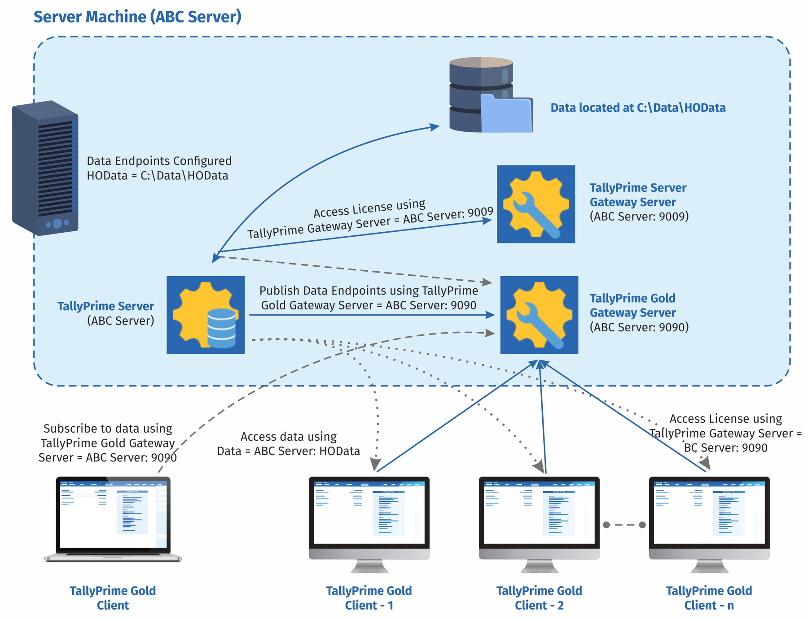

One data server for every Tally user in your company.
TallyPrime Server adds a server-based data architecture to the Gold licence, built for 50 or more users working at once, with secured data access and monitoring. NextGen deploys and supports it for you.
Each dot is 2 people. A rough guide only. We confirm after a short look at your setup.
How TallyPrime Server works
Your data stays on one server machine. Every Gold client connects to it through gateway servers, so nobody needs to know where the files are.

- Data sits on the serverTallyPrime Server keeps the company data on the server machine and publishes it as a named data endpoint, such as HOData.
- Clients use a name, not a pathEach TallyPrime Gold client subscribes through the Gold Gateway Server and opens data by its endpoint name.
- Licences are served centrallyClients access their licence through the gateway server. In this example the ports are 9009 and 9090.
What TallyPrime Server gives you
Tally describes it as an enterprise-class product for fast-growing medium and large businesses. These are the four things it gives you, and how we put them to work.
Concurrency of operations
Many users can load companies, save transactions, export reports, import data, print reports, take backups and more, all at the same time, without downtime or waiting.
- Everyone works at onceUsers load companies and save transactions together, with no queue and no lag.
- Export, import and printHeavy tasks run alongside daily entry instead of blocking it.
- Backups without a pauseTake a backup while others keep working.
- Better use of man-hoursFrictionless access means tasks finish faster, so your people and resources are used better.
Example. One user pulls last month's report while another updates a bill for the same month. Concurrent access lets both finish their work without any lag.
Security of data
Owners and administrators decide who can reach which data, and every user must be authorised first.
- Access permissionsDefine data access for each person, backed by mandatory authorisation.
- No file paths sharedOnce data is on TallyPrime Server, clients only need the name of the data server. The physical location stays private.
- Server-level permissionsControl company data operations such as backup and restore at the server.
- One place to manageAdministrators keep access control in a single, central place.
Reliability of systems
Minimal downtime and continuous data availability, so you can reach company data anytime, from anywhere.
- Data always availableContinuous access to company data with minimal downtime.
- Backup while people workUsually backups need users to stop so the copy is consistent. Here, users keep entering transactions and viewing reports while the backup runs.
- Client activity is isolatedWhat happens at one client does not touch data on the server or any other user's work.
- Less time lostFewer interruptions from system unavailability.
Optimisation of resources
TallyPrime Server analyses system usage and user activity, so you can see where time goes and improve it.
- Who is logged inAuthorised users can see the list of logged-in users.
- Which companies are openSee what data is being used right now.
- Track activityFollow what users are doing across the system.
- Disconnect usersEnd a session if the need arises.
Example. You expect an accountant to spend 60 hours a month entering bank statement data for reconciliation. The TallyPrime Server report shows 150 hours. Now you can see it, and take corrective action to bring the time down.
How NextGen sets it up
We handle the technical part, so your team just keeps working in Tally.
- Server setup and configurationWe install and configure TallyPrime Server for stable, steady operation.
- Network configurationWe check and adjust your network so every PC connects reliably.
- Performance optimisationWe tune the setup to your number of users and size of data.
- User access setupWe create users and set what each person can see and change.
- Support and maintenanceTechnical support and AMC keep the server healthy after go-live.
- Business continuityBackup and recovery planning so a failure does not stop the business.
Silver, Gold or Server?
Pick by how many people use Tally together. You can start small and move up without changing software.
Silver
One person, one computer.
- Users: single user
- Runs on: a standalone PC
Gold
A team on the same network.
- Users: unlimited, multi-user
- Runs on: several PCs on a LAN
Gold with Server For 50+ users
Many people working at once.
- Users: 50+ concurrent
- Control: central access and monitoring
How we roll it out
A typical TallyPrime Server project, from first call to go-live.
- AssessWe look at your users, data size and network.
- InstallWe set up TallyPrime Server on your machine.
- Move dataWe load your companies and test them.
- Set accessWe add users and set their rights.
- Train and go liveWe train your admin and stay close for the first weeks.
Try it before you commit
Tally provides a 10-day trial of TallyPrime Server through its partners. We will set it up with a copy of your data so you can judge it with real users.
Works with the rest of NextGen
The server is one piece. These services make the whole setup dependable.
Common questions
Do I need the Gold licence first?
Yes. TallyPrime Server works with the TallyPrime Gold licence. It adds the data server on top.
How many users make the Server worthwhile?
TallyPrime Server is built for 50 or more concurrent users. For smaller teams, Gold on a LAN is often enough. We will tell you honestly which you need.
Can I try it first?
Yes. Tally offers a 10-day trial of TallyPrime Server through a partner. Ask us to arrange it.
Where does my data live?
On the server. Users connect with the data server name, so they do not need the file location.
Can my team work remotely?
Yes. For staff outside the office, see our Tally on Cloud service.
Who looks after it after setup?
NextGen. Our support and AMC covers monitoring, upgrades and fixes.
Need more than a shared folder?
Tell us how many people use Tally and how big your data is. We will recommend Gold or Gold with Server.
Tally and TallyPrime are trademarks of Tally Solutions. NextGen is an authorized Tally solution provider in Sri Lanka.